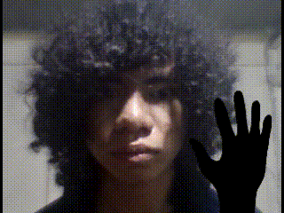

Hi, I'm Justin
I'm an aspiring front-end developer currently in my 2nd year of IT studies at UC. I'm passionate about building clean, user-friendly web interfaces and learning how to turn ideas into interactive digital experiences. I enjoy exploring modern design trends, improving my coding skills, and creating websites that are both functional and visually appealing.
About Me
I’m Justin, a second-year Information Technology student at UC who is learning front-end web development. I enjoy practicing HTML and CSS and exploring how websites are designed. I’m interested in making web pages that look clean, are easy to use, and work well for the people who visit them. When I’m not studying, I enjoy gaming in my free time. I also like discovering new design ideas and finding ways to improve my coding skills. My goal is to keep learning, gain more experience, and create better websites as I continue my studies.
Also i like playing Left 4 Dead 2
My Skills